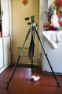

器材库 > 脚架 > 190NAT2

该产品没有存档的规格参数
maomao12345552007-12-26 03:194.92 分
操作性 5.00功能性 5.00美观性 5.00趣味性 5.00耐用性 4.50性价比 5.00

大漠人2004-01-17 01:222.17 分
操作性 3.00功能性 2.00美观性 2.00趣味性 2.00耐用性 2.00性价比 2.00
zhaoxiang2003-02-10 14:594.42 分
操作性 4.00功能性 5.00美观性 5.00趣味性 4.50耐用性 5.00性价比 3.00
该产品暂无存档的产品图
评测 / 相关文章
该产品暂无存档的评测文章